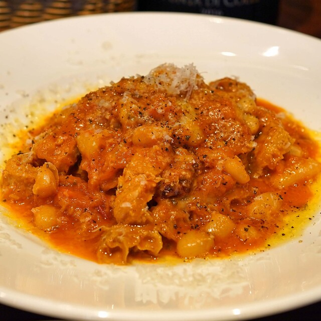
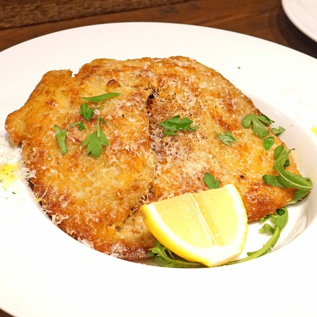
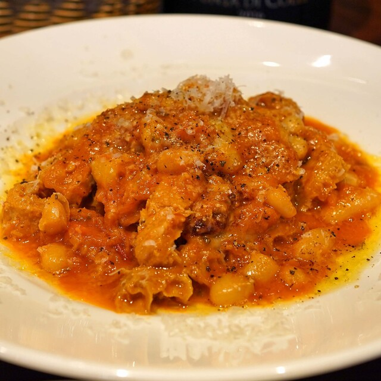
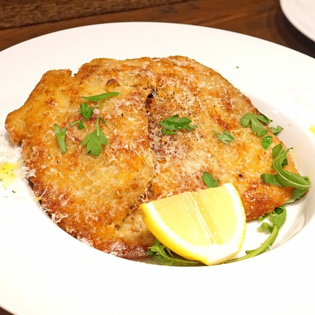

EXTRA edition 「Tappa」
Tappa, a delightful restaurant in Mejiro, Tokyo, is known for its fusion cuisine and vibrant atmosphere.
The menu offers a variety of dishes blending Japanese and international flavors, perfect for any palate.
The stylish decor and friendly staff create a welcoming environment for diners.
Signature dishes and creative cocktails make every visit a unique culinary experience.
Tappa is a must-visit for anyone looking to enjoy innovative and delicious fusion cuisine.
 


